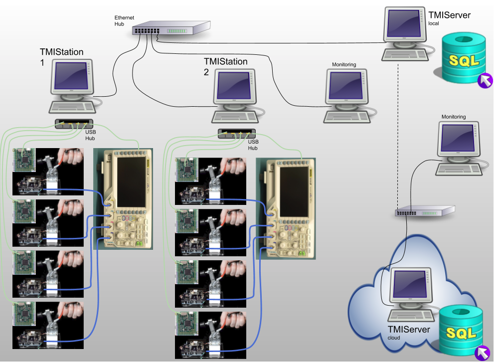
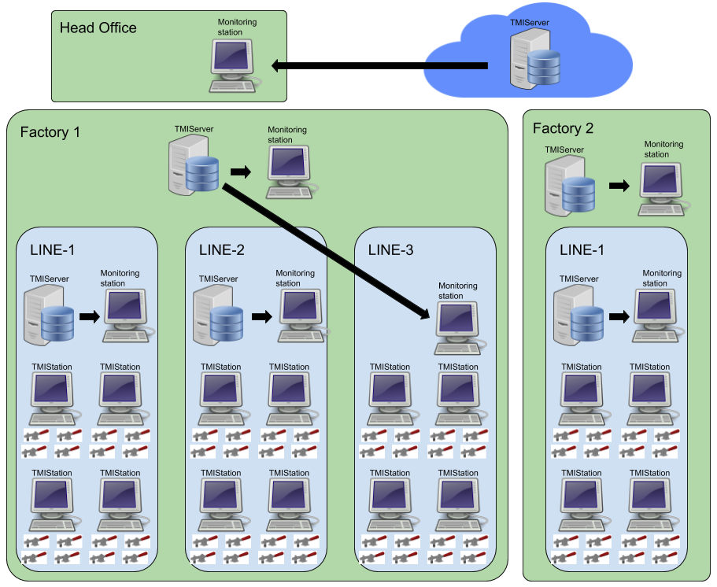
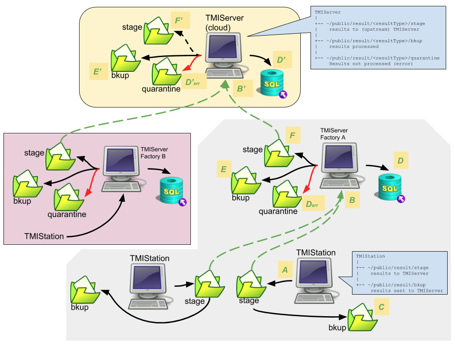

System¶
This section describes system related considerations to building your test system with TMIStation and TMIServer.
Architecture¶
This is a typical TMI system architecture layout. More complex systems are possible and shown later in this section.
Notes:
- Local wired LAN for TMIStations and TMIServer (local)
- Wired LANs are more reliable and secure than wireless
- This LAN should NOT have a connection to the internet
- TMIStations
- only two are shown but there can be as many as needed
- USB is used to connect to local test jigs and test equipment
- Test equipment can be shared across test jigs at one TMIStation
- Support for sharing equipment across TMIStations is not (yet) supported
- Sends results to a TMIServer
- if a TMIServer is not online, testing can still continue, results will be staged for upload to the TMIServer when it comes online
- TMIServer
- there should only be ONE per LAN
- this computer should have a fixed IP address as every TMIStation is configured to look for the TMIServer
- TMIServer can be configured to send its results upstream to another TMIServer
- TMIServer can be run in the cloud
- Local TMIServers can be configured to send their results upstream to a cloud based TMIServer, thus all you results can end up in one place
- As noted above, you don’t want to have your production LAN connected to the internet for security and reliablity reasons, therefore, at some regular interval you will remove a local TMIServer from the production LAN and connect it to the internet so it can find the upstream TMIServer and upload results to it
This is a more sophisticated TMI system plan.
Here two remote factories send their data to a cloud TMIServer so that Head Office can monitor all Result data.
Note in Factory 1 there are three production lines. Line 1 and 2 have their own local TMIServer and a monitoring station for viewing the dashboard. Line 3 does not have a local TMIServer and is using the factory TMIServer.
Results Flow¶
This diagram also shows a possible architecture of a TMI system. In this diagram the focus is on what happens to DUT results.
This architecture shows how TMIServers can be stacked on top of each other. Each TMIServer is aggregating more results that come from below it. In this case, two factories are supplying results to a central TMIServer.
What follows is a description of lables A-F…
- A
- Result JSON is created at the TMIStation and saved locally to a stage directory
- B
- At some point, TMIStation will attempt to contact a TMIServer and send the result JSON to it.
- If TMIServer is not connected/reachable, the file remains in stage.
- C
- If TMIServer indicates the file was received successfully, TMIStation result is moved from stage to the bkup folder.
- D
- TMIServer processes the result JSON into its (postgres) database.
- Derr
- If there was a processing error, the result JSON is stored in quarantine folder.
- E
- result JSON is stored in bkup folder if it was processed without error.
- F
- if this TMIServer is configured to have an upstream TMIServer, the result JSON is stored in stage folder
- At this point, the process B-F repeats itself.
Notes:
- The Result JSON is backed up at each level. These backups can be turned off if desired.
- Any TMIServer dashboard can be accessed with web browser. The results that can be seen will be that which is local to that TMIServer.
Definitions¶
Test Jigs
- These are custom designed fixtures that interface your product (Device Under Test (DUT)) to the TMIStation programs
Test Jigs- have
Interface Boards(see defintion) - have a nest where your DUT PCB is located and aligned to the spring probes
- have
Interface Board
- A Printed Circuit Board (PCB) that has spring probes and some type of controller that the TMIStation can talk to, to take measurements, and otherwise control the stimulus to the DUT.
- Are custom developed depending on the DUT requirements
- TMI has developed a reference design based on MicroPython board, see TBD
Interface Controller
- A device with USB connectivity and a processor in which TMIStation can control and otherwise interface to
- Examples that could be used, Arduino, MicroPython, RaspBerry Pi, etc
- An
Interface Controllermay be designed into theInterface Boardor it can be a daughter card that plugs into anInterface Board- TMI has developed a reference design based on MicroPython board, see TBD